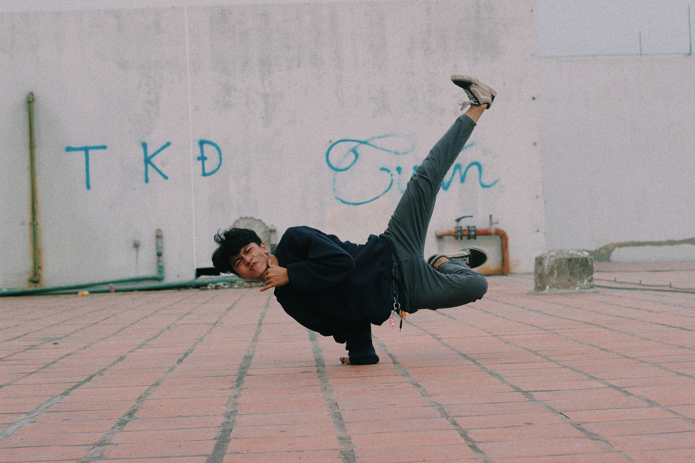
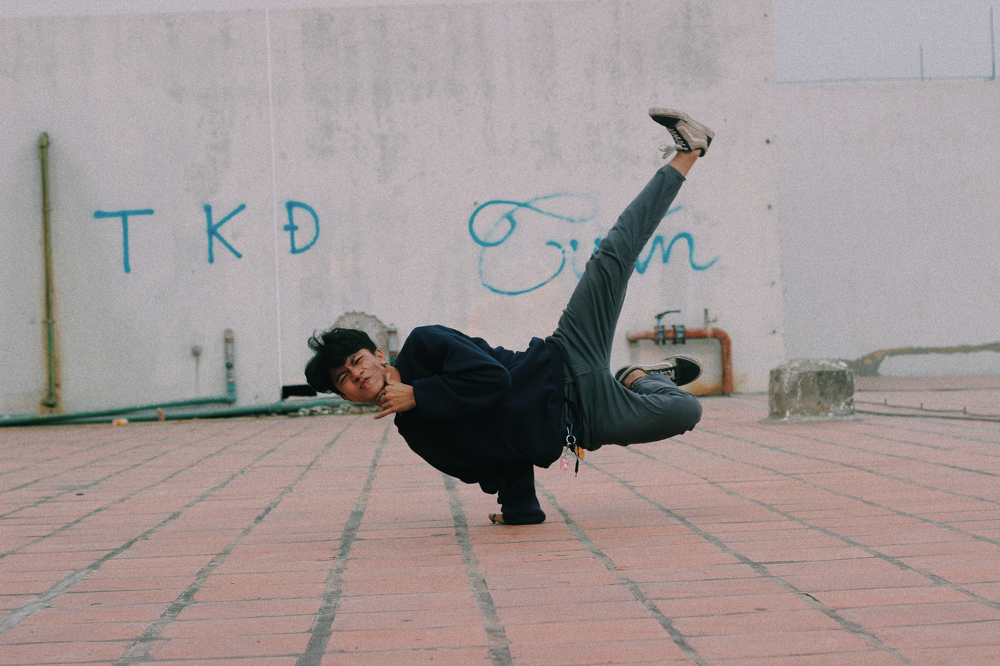
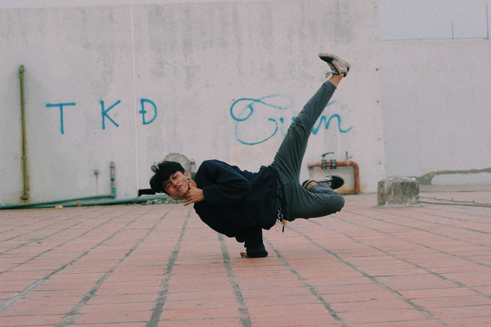

is our way of sharing our inspiration that arises from singing, music and of course dancing.

"Dancing is living"
What is "FMR" about?
We want to show people that they can express themselves through dance and that it is good for us in many aspects. Our overall vision is to have an influence on our public about their perspectives on the subject of dance and even inspire the audience to practice dancing.
What is dancing?
Dance involves the rhythmic movement of the human body, usually to music.
It is one of the oldest forms of human expression. Dance movements are often
closely related to the gestures of everyday life. Dance serves a variety of
purposes in cultures around the world.
Benefits of Dancing
Improved health conditions
Improved condition of your heart and lungs.
Increased muscular strength, endurance and motor fitness.
Increased aerobic fitness.
Improved muscle tone and strength.
Weight management.
Minimized Stress
Better coordination, agility and flexibility.
Fun worthy
Dancing and other movements allow a person to express themselves and let loose. When a person feels free, the body releases happy hormones like dopamine.
This hormone helps lift a person's mood and alleviate the symptoms of anxiety and depression.
 
